Kombinatorika
Ylmy we amaly döredijiligimizde çözülişlerinde tükenikli sandaky elementlerden dürli kombinasiýalary düzmek hem-de olaryň sanyny hasaplamak zerur bolan meseleler ýygy-ýygydan duş gelýärler.Olar kombinatoriki meseleler diýlip atlandyrylyp, matematikanyň şeýle meseleleri öwrenýän şahasyna bolsa kombinatorika diýilýär. «Kombinatorika» sözi birleşdirmek, utgaşdyrmak» diýilmegini aňladýan combinare diýen latyn sözünden gelip çykandyr.
Jem düzgüni
Eger a elementi m usul bilen, b elementi bolsa n usul bilen saýlap bolýan bolsa we a elementi saýlamagyň islendik usuly b elementi saýlamagyň islendik usulyndan tapawutly bolsa, onda «a ýa-da b» saýlamagy m + n usul bilen amala aşyryp bolar.
Köpeltmek düzgüni
Goý, n sany elementlerden k sany elementleri yzly-yzyna saýlap almaly bolsun. Eger-de birinji elementi n1, ikinji elementi n2, üçünji elementi n3 we şuňa meňzeşlikde dowam etmek bilen k-njy elementi nk sany dürli usullarda saýlap almak mümkin bolsa aýdylan k sany elementleri saýlap almak mümkinçilikleriniň sany n1∙n2…nk köpeltmek hasylyna deňdir.
Çalşyrmalar
Kesgitleme: n sany elementleriň bellibir tertipde ýerleşip gelmekleriniň islendigine n sany elementlerden çalşyrma diýilýär.
Pn= n!
Ýerleşdirmeler
Kesgitleme: n sany elementlerden k(k ≤ n) elementli ýerleşdirme diýlip, şol n elementlerden kesgitli tertip de alnan k sany elementleriň islendik köplügine aý dylýar.
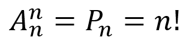
Utgaşdyrmalar
Kesgitleme. Berlen n sany elementleriň köplüginden alnan k sany elementleriň islendik köplügi
n sany elementlerden k elementli utgaşdyrma diýlip aýdylýar.
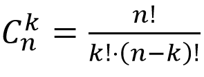
Paskalyň üçburçlugy
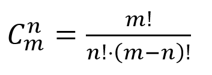
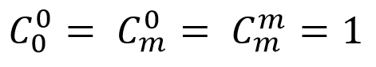
Ýokardaky formulany we gatnaşygy göz öňüne tutup,
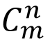 sanyň doly tablisasy beýan edilen.
Bu tablisa onuň häsiýetlerini derňän fransuz matematigi B.Paskalyň (1623–1662) hatyrasyna «Paskalyň üçburçlugy» diýip atlandyrmak kabul edilendir.
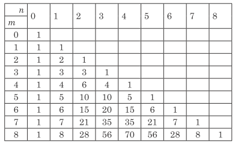
Bu tablisada şeýle kanunalaýyklyk bardyr: çepde birinji sütündäki sanlar setiriň nomerini, ýokardaky birinji setirdäki sanlar bolsa sütüniň nomerini aňladýandyr.Tablisadaky galan sanlar bolsa utgaşdyrmalaryň sanydyr.
Paskalyň üçburçlugynyň şeýle häsiýetleri bardyr:
1) – bu her bir setirdäki sandyr;
2) m-nji setirdäki sanlaryň jemi 2m -e deňdir;
3) islendik setiriň sanlarynyň jemi yzyndaky setiriň
sanlarynyň jeminden 2 esse uludyr;
4) 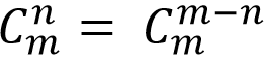
Paskalyň üçburçlugy, köplenç, deňtaraply uçburçluk görnüşinde ýazylýar.
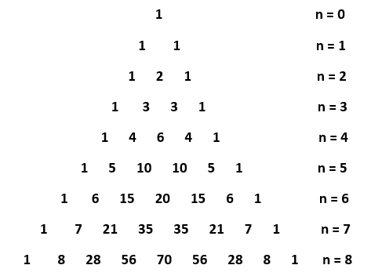
Nýuton binomy
n islendik natural san bolanda (a + x)n derejäni almak üçin aşakdaky fomula ulanylýar.
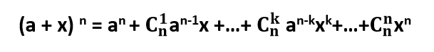
Bu ýerde:
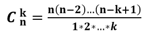
başgaça
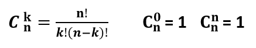
Bu formula iňlis matematigi we fizigi Isak Nýutonyň (1642–1727) hatyrasyna Nýuton binomynyň formulasy diýilýär.
Binomial koeffisiýentleriň käbir häsiýetleri.
Bu esasy formulada a = x = 1 goýup alarys.
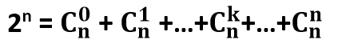
Şeýlelikde, n-iň berlen bahasynda binomial koeffisiýentleriň jemi 2n -e deňdir.
Indi esasy formulada a = 1, x = –1 goýalyň. Onda alarys:
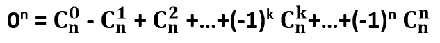
Bu ýerden görnüşi ýaly, jübüt orunlarda duran binomial koeffisiýentleriň jemi täk orunlarda duran binomial koeffisiýentleriň jemine deňdir.
formulany ulanyp alarys:
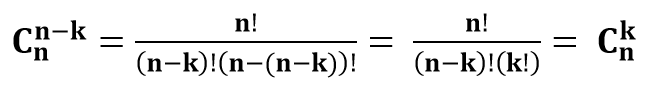
Diýmek, dagytmanyň uçlaryndan deňdaşlaşan binomial koeffisiýentler biri-birine deňdir.
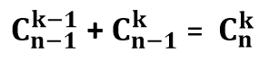
Bu formula binomial koeffisiýentleri tapmaklyga mümkinçilik berýär.